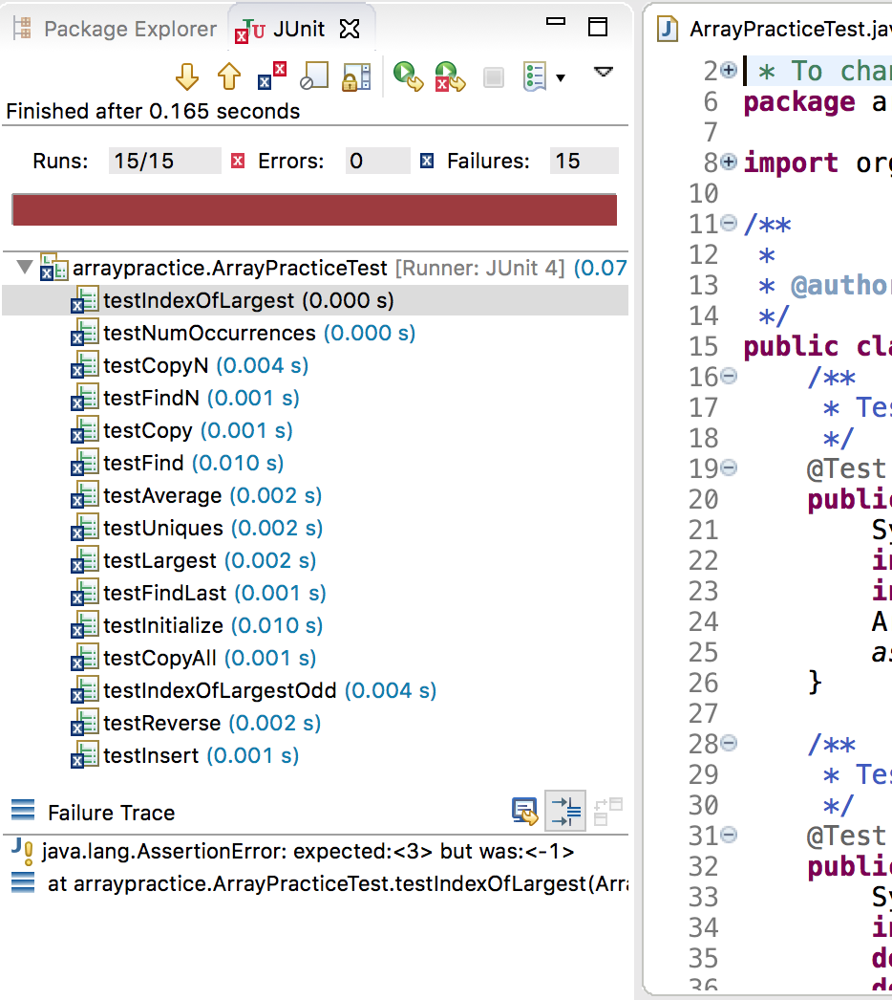
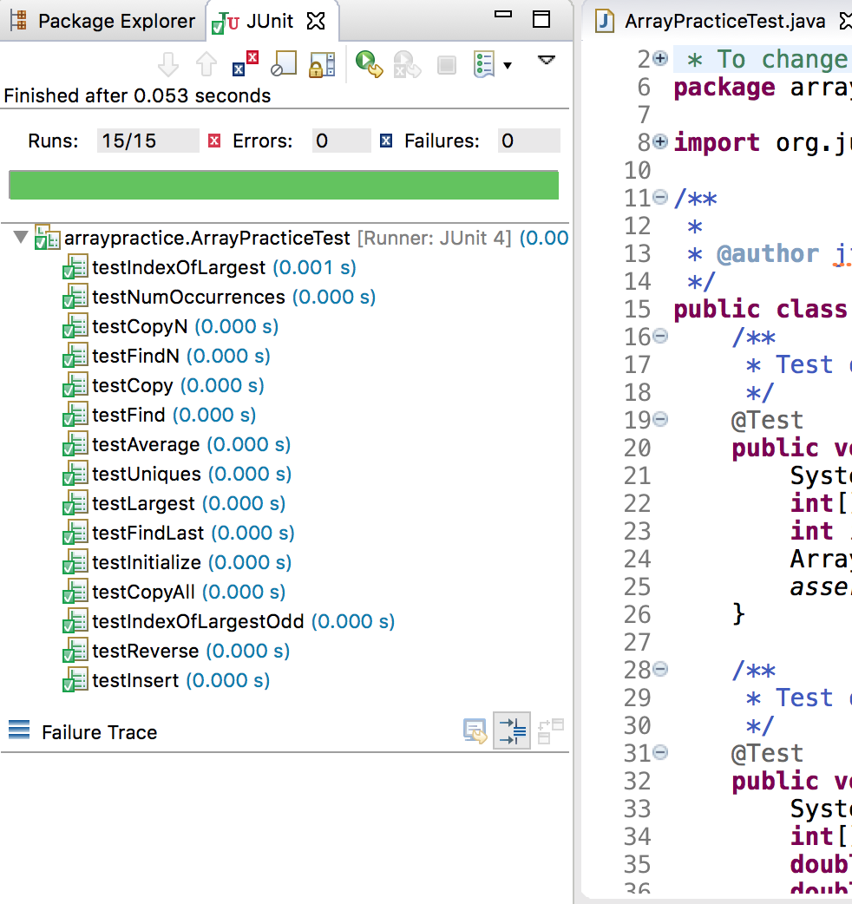

due: Monday, March 21
70 points + a possible 10 extra credit points
The purpose of this exercise is to practice with arrays and static methods.
Please download this zipped Eclipse project. Just as you did with the String Practice Assignment, import it into Eclipse by choosing File -> Import -> General -> Existing Projects into workspace -> Select archive file. Open the project and its included source file ArrayPractice.java. You'll find that it contains several methods that have not yet been finished. For now, the methods contain only a placeholder return value so that the code will compile. Fill in your own implementation.
The uniques() method is extra credit.
Just as in the String-practice assignment, you do not have to write a main() to test your code. All of the tests have been written for you using the JUnit testing framework. For now, you are not required to understand how the tests work. If you're curious about the tests, they're in the file ArrayPracticeTest.java. Please do not modify the contents of this file.
As in a previous assignment, in order to run your tests, open the file that contains the unit tests (ArrayPracticeTest.java), and click the run button. Before you've written any of your own code, the methods will all be broken, the tests will fail, and you'll see output like:
but after your code is completed and working properly, you'll see:
Do not modify any files in the project other than ArrayPractice.java. Do not use the Arrays class in your methods. Do not change the return types, names, or parameters of any of these functions or of the name of the class itself. There is also no need in this assignment for any global variables. In short, you will be modifying the body of each of these functions.
When you're finished, upload to canvas either the .java file that includes your implementation of the methods. You may instead zip your entire project folder and upload the zip file to Canvas.